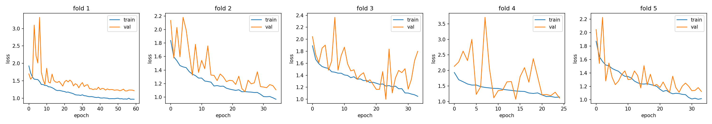
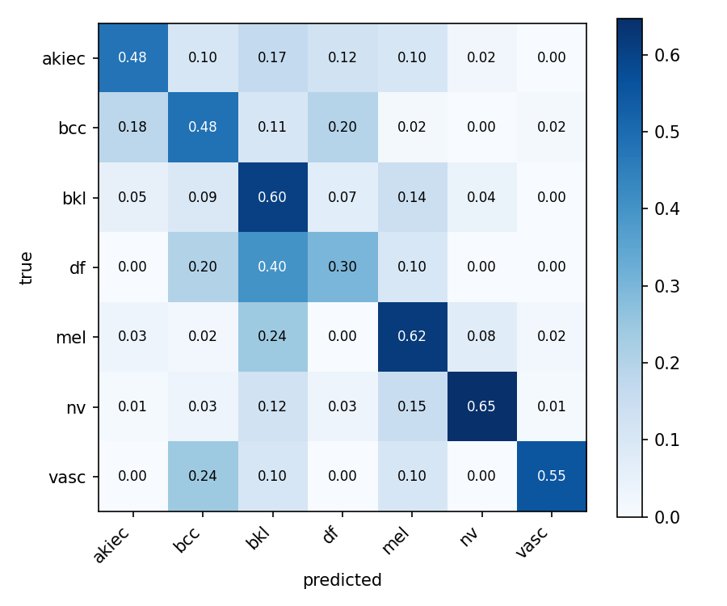
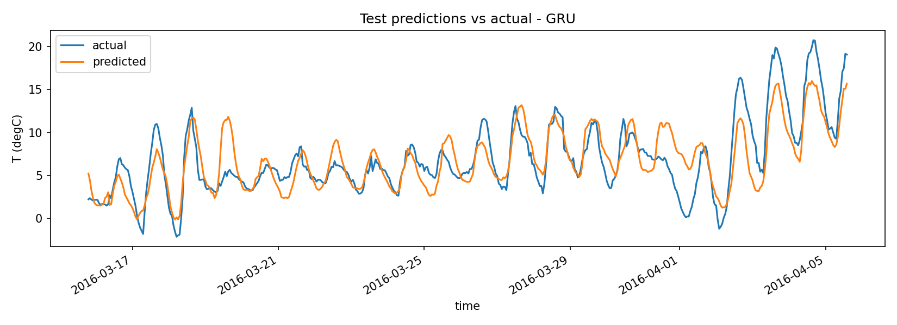

Materia: Inteligencia Artificial — Lic. en Sistemas de Información (FCyT–UADER)
Integrantes: [APELLIDO 1, Nombre] — [APELLIDO 2, Nombre]
Fecha de entrega: 30 de septiembre de 2026
Se diseñaron, implementaron y evaluaron con Keras dos arquitecturas que explotan la estructura de los datos:
akiec, bcc, bkl, df, mel, nv, vasc) sobre HAM10000 (10 015 dermatoscopías, 96×96×3, normalizadas a [0, 1]). El dataset es muy desbalanceado (nv ≈ 67 %, df ≈ 1 %) y contiene varias imágenes de una misma lesión (lesion_id).T (degC) a +24 h a partir de una ventana de 72 h sobre Jena Climate 2009–2016 (registros cada 10 min submuestreados a 1 h). Se usan 19 variables: 11 meteorológicas, el viento convertido a vector (wx, wy, max wx, max wy) y codificación cíclica seno/coseno de la hora del día y del día del año.| Etapa | Operación | Salida | Parámetros |
|---|---|---|---|
| Aumentación (solo train) | RandomFlip(h+v), RandomRotation(0.1), RandomZoom(0.1) | 96×96×3 | 0 |
| Bloque 1 | 2 × [Conv2D 32, 3×3, s=1, same → BN → ReLU] → MaxPool 2×2, s=2 |
48×48×32 | 10 400 |
| Bloque 2 | 2 × [Conv2D 64 → BN → ReLU] → MaxPool | 24×24×64 | 55 936 |
| Bloque 3 | 2 × [Conv2D 128 → BN → ReLU] → MaxPool | 12×12×128 | 222 464 |
| Cabeza | GlobalAveragePooling2D → Dropout(0.5) → Dense(7, softmax) | 7 | 903 |
| Total | 289 703 (288 807 entrenables) |
Convolución, padding y stride. La salida de cada capa es o = ⌊(i + 2p − k)/s⌋ + 1. Con k=3, s=1 y padding="same" (p=1) se preserva la resolución (o = i), de modo que los bordes de la lesión se procesan igual que el centro; el pooling k=2, s=2 la reduce a la mitad: 96 → 48 → 24 → 12. Cada Conv2D tiene k·k·C_in·C_out + C_out parámetros (p. ej. 3·3·64·128+128 = 73 856): gracias a la conectividad local y los pesos compartidos, el mismo detector de bordes/texturas recorre toda la imagen. Una capa densa conectando la entrada 96·96·3 a sólo 128 neuronas ya requeriría 3,5 M de parámetros, 12 veces más que toda la red.
Campo receptivo. Con r_l = r_{l−1} + (k−1)·j_{l−1} y j_l = j_{l−1}·s, el campo receptivo crece 3 → 5 → 6 → 10 → 14 → 16 → 24 → 32 → 36 px: cada activación final "ve" un 37 % del lado de la imagen, suficiente para capturar la forma y el borde de la lesión; el Global Average Pooling integra luego toda la superficie.
Pooling y equivarianza. La convolución es equivariante a traslaciones (desplazar la entrada desplaza el mapa de características); MaxPool aporta invarianza local parcial, ya que un corrimiento menor que la ventana no modifica el máximo, y reduce la resolución y el costo de las capas siguientes. Usar GAP en lugar de Flatten reduce la cabeza de 12·12·128·7 = 129 024 a 903 parámetros y elimina la dependencia de la posición absoluta.
Activaciones y estabilidad del gradiente. En las capas ocultas se usa ReLU (derivada 1 en la zona activa: no satura ni atenúa el gradiente al propagarlo por 6 capas) con inicialización He (Var(W) = 2/n_in), que conserva la varianza de las activaciones bajo ReLU. BatchNormalization normaliza la preactivación de cada canal, estabiliza su distribución entre pasos y permite tasas de aprendizaje mayores. En la salida, softmax convierte los logits en una distribución de probabilidad sobre las 7 clases; junto con la entropía cruzada categórica equivale a maximizar la log-verosimilitud y produce el gradiente simple ŷ − y.
Regularización. Dropout 0.5 antes de la capa de salida, L2 (λ = 1e-4) en los núcleos convolucionales, aumentación geométrica (las dermatoscopías no tienen orientación canónica) y EarlyStopping.
| Hiperparámetro | Valor | Justificación |
|---|---|---|
| Optimizador / LR inicial | Adam, 5e-4 | Reducido desde 1e-3 (primera iteración) para amortiguar la oscilación de la validación junto con BN |
| Scheduler | ReduceLROnPlateau (×0.5, paciencia 5, mín. 1e-6) | Afina el mínimo cuando la validación se estanca |
| Batch size | 32 | Compromiso entre memoria y ruido estocástico útil para BN |
| Épocas | máx. 60; EarlyStopping (paciencia 10, restaura mejores pesos) | Épocas ejecutadas: 60/35/34/25/34; mejor época media: 28.8 |
| Filtros | (32, 64, 128) | Se duplican al reducir la resolución a la mitad (costo por bloque ≈ constante) |
| Desbalance | class_weight="balanced" calculado solo con el train de cada fold |
Pesos de 0.21 (nv) a ≈ 12 (df); usar todo el dataset filtraría la distribución de validación |
Una partición aleatoria pondría imágenes de la misma lesión en train y validación, y la red podría "reconocer la lesión" (color de piel, vello, reglas o marcas del dermatoscopio) en lugar de aprender la clase. Por eso: (1) GroupShuffleSplit separa un holdout de test del 15 % por lesion_id (8 488 imágenes de desarrollo / 1 527 de test); (2) sobre desarrollo se aplica StratifiedGroupKFold (k = 5), que mantiene cada lesión en un solo fold y preserva la proporción de clases; (3) un assert verifica en ejecución que los grupos de train y validación sean disjuntos. El test se evalúa una sola vez, promediando las probabilidades de los 5 modelos de fold (ensemble), de modo que nunca se usa para elegir entre ellos.
Por el desbalance, accuracy no es informativa (predecir siempre nv da 67 %): se reportan balanced accuracy (media de los recalls), F1 macro, ROC-AUC one-vs-rest y el recall de melanoma, la clase clínicamente crítica.
| Partición | Balanced acc. | F1 macro | ROC-AUC (OvR) | Recall mel |
|---|---|---|---|---|
| Fold 1 | 0.601 | 0.466 | 0.898 | 0.554 |
| Fold 2 | 0.449 | 0.385 | 0.871 | 0.414 |
| Fold 3 | 0.558 | 0.479 | 0.887 | 0.753 |
| Fold 4 | 0.410 | 0.346 | 0.885 | 0.594 |
| Fold 5 | 0.468 | 0.400 | 0.856 | 0.442 |
| CV: media ± σ | 0.497 ± 0.071 | 0.415 ± 0.050 | 0.880 ± 0.015 | 0.551 ± 0.121 |
| Test holdout | 0.527 | 0.451 | 0.898 | 0.618 |

Figura 1. Pérdida de entrenamiento y validación por fold.

Figura 2. Matriz de confusión normalizada por fila en el test holdout.
df o vasc por fold). Esa escasez explica la varianza entre folds: σ del recall bcc = 0.23 (0.00 en el fold 4, 0.67 en el 5) frente a σ = 0.03 en bkl. El AUC, que mide la capacidad de ordenar y no depende del umbral de argmax, es estable (σ = 0.015): la representación aprendida es consistente y lo que varía es la frontera de decisión en las clases raras.mel→bkl (24 %), df→bkl (40 %) y nv→mel (15 %). Por los pesos de clase, el recall de nv baja a 0.65 a cambio de detectar el 62 % de los melanomas, un intercambio deseable en un contexto de cribado.En una RNN simple, h_t = tanh(W_h h_{t−1} + W_x x_t + b), y el gradiente propagado por BPTT a lo largo de T pasos es un producto de jacobianos:
∂h_T/∂h_k = ∏_{t=k+1}^{T} diag(tanh'(a_t)) · W_h
Si el radio espectral de W_h (por |tanh'| ≤ 1) es < 1, la norma decae exponencialmente (desvanecimiento) y la red no aprende dependencias de 24–72 h; si es > 1, crece exponencialmente (explosión). Con ventanas de 72 pasos, la RNN simple no es viable.
c_t = f_t ⊙ c_{t−1} + i_t ⊙ c̃_t, por lo que ∂c_t/∂c_{t−1} = diag(f_t). Si la compuerta de olvido f_t ≈ 1, el gradiente atraviesa el tiempo casi sin atenuarse (constant error carousel), y la red aprende cuándo recordar y cuándo olvidar.h_t = (1 − z_t) ⊙ h_{t−1} + z_t ⊙ h̃_t, con ∂h_t/∂h_{t−1} ≈ diag(1 − z_t): el mismo camino aditivo con 3 bloques de pesos en lugar de 4 (≈ 25 % menos parámetros).clipnorm = 1.0, que reescala g ← g·1/‖g‖ cuando la norma supera 1, conservando la dirección.Se entrenaron LSTM y GRU con la misma arquitectura y se eligió la de mejor rendimiento. Arquitectura: Input(72×19) → Celda(64, return_sequences) → Celda(64) → Dense(32, ReLU) → Dense(1), con dropout de entrada 0.2 y dropout recurrente 0.15 (máscara fija en todos los pasos) y L2 = 1e-4 en los pesos de entrada y recurrentes.
El split es estrictamente cronológico, sin mezclar: 70 % train (ene 2009 – ago 2014) / 20 % validación (ago 2014 – mar 2016) / 10 % test (mar – dic 2016). La media y el desvío de normalización se ajustan solo con train y se guardan en models/rnn_norm.json para la inferencia. Las ventanas se generan dentro de cada partición, así que ninguna cruza una frontera: el target de cada ventana es T en la posición 72 + 24 − 1, y se verifica la alineación de los timestamps. Solo se mezclan las ventanas del conjunto de train entre sí, lo que no filtra información del futuro porque cada ventana es un par (pasado → futuro) autocontenido.
| Hiperparámetro | Valor | Justificación |
|---|---|---|
| Optimizador | Adam, LR 1e-4, clipnorm=1.0 |
LR bajo para una convergencia estable del BPTT a 72 pasos; el clipping evita la explosión |
| Pérdida / métrica | MSE final (many-to-one) / MAE | Se minimiza el error del único valor pronosticado; MSE penaliza más los errores grandes (picos de temperatura); MAE se interpreta en °C |
| Batch / épocas | 256 / máx. 50, EarlyStopping (paciencia 8) | Ventanas muy correlacionadas: un batch grande estabiliza el gradiente |
| Ventana / horizonte | 72 h / +24 h | Tres ciclos diarios completos de contexto |
| Unidades | (64, 64) + Dense 32 | Suficiente para 19 variables con ≈ 43–57 k parámetros |
| Modelo | MAE (°C) | RMSE (°C) | Parámetros | Épocas | Tiempo |
|---|---|---|---|---|---|
Persistencia (T(t+24) = T(t)) |
2.371 | 3.086 | 0 | — | — |
| Denso (Flatten → Dense 64 → 1) | 2.247 | 2.842 | 87 681 | 32 | 107 s |
| LSTM (64, 64) | 2.110 | 2.664 | 56 641 | 50 | 3 004 s |
| GRU (64, 64) | 2.062 | 2.611 | 43 393 | 50 | 2 755 s |
La GRU es el mejor modelo: reduce el MAE un 13.0 % respecto de la persistencia y un 8.2 % respecto del denso, con la mitad de parámetros que este último. La mejora frente al denso, que ve la misma ventana pero aplanada y sin noción de orden, confirma que la recurrencia aprovecha la estructura secuencial.

Figura 3. Predicción a +24 h de la GRU frente al valor real (tramo de test).
lesion_id y el time split cronológico, test y validación coinciden (CNN: 0.527 vs 0.497 ± 0.071; RNN: sin deriva mensual), lo que confirma una evaluación honesta, sin fuga de información.same, pooling y GAP generaliza (AUC 0.90) con solo 290 k parámetros. Su límite es el sesgo, no el sobreajuste; la varianza se concentra en las clases con pocas lesiones. Mejoras posibles: mayor resolución de entrada, más profundidad o transfer learning y focal loss para las clases minoritarias.Entregables: código en cnn/, rnn/, predict.py y make_rnn_window.py; modelos exportados en models/ (cnn_fold1..5.keras, usados en ensemble para test e inferencia; rnn_gru.keras, rnn_lstm.keras, rnn_dense.keras; cnn_classes.json y rnn_norm.json); métricas y figuras en reports/.